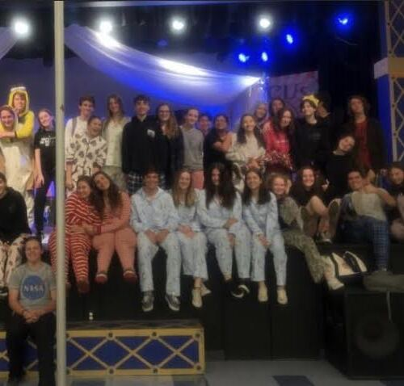
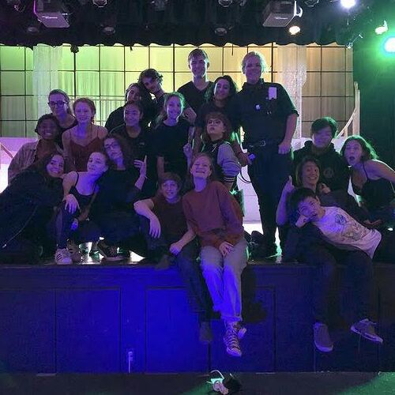
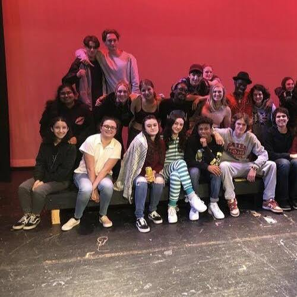
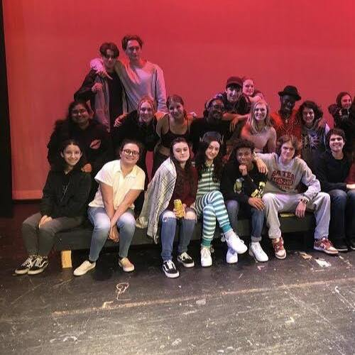

Veronica Fahn
I am seeking to expand my professional skillset while attending univerisity. I have taken classes in psychology, philosophy, and now computer science. General skills include: organization, responsible time management, a fast learner, and a creative thinker.
As listed below, prior work experience includes background acting on multiple popular networks such as Disney Channel and streaming services such as Hulu and Peacock. These jobs helped me develop patience and teamwork skills.
I have volunteered at schools and environmental services. I also have experience in theater, having worked on stage crew in high school.
Experience
Background Acting
• Worked on "Bunk'd" at Hollywood Center Studios (July 2015)
• Worked on "Saved by the Bell" at Universal Studios (August 2021)
• Worked on "The Goldbergs" at Sony Studios (September 2021)
Volunteer Work
• Heal the Bay: cleanup and assortment of trash
• Canyon Charter Elementary School: game booth attendant at annual Fiesta festival, worked with children
• Tree People: planting trees and de-weeding native plant gardens
Stage Crew
• Worked on school productions of "The Great Gatsby," "The Barker," and hit musical "Chicago"
• Involved: heavy lifting, mopping and sweeping the stage, organizing sets and props backstage
• Communicated with actors and other stagehands to create teamwork and a tightknit community
Education
University of California, Riverside
Portfolio




